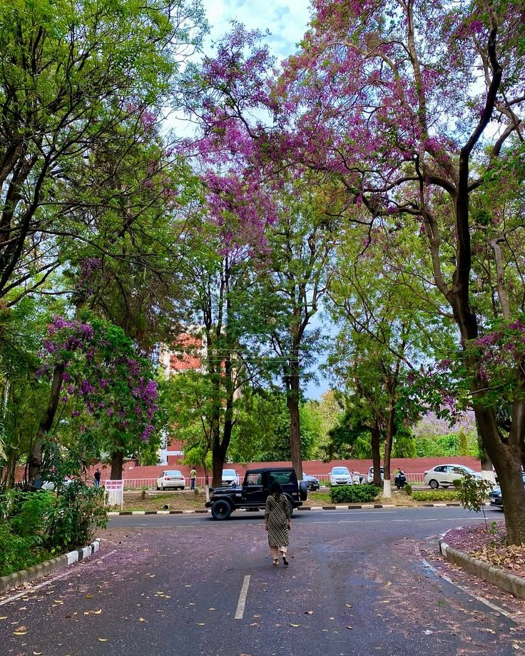

Chandigarh Land Area Calculator: Professional Kanal, Marla & Acre Converter 2026
Chandigarh revenue records aur Estate Office guidelines ke anusaar land naap-jokh ka manual setup.

Introduction to Chandigarh Land Mapping System
Chandigarh me jab bhi aap koi plot, residential sector house, commercial property, ya surrounding agricultural farmlands purchase ya sell karte hain, toh sabse pehle us zameen ka **Land Area Calculator** chalana sabse important framework mana jata hai. Chandigarh Union Territory revenue department aur Estate Office ke custom land boundaries management rules ke mutabik yahan ka measurement layout Punjab aur Haryana ke regional standards se closely aligned hai. Chandigarh me traditional scale data registers mukhya roop se **Kanal, Marla, Sarsai (Sarsahi), Biswa, Gaj (Square Yard), Acre, aur Hectare** units par compute hota hai.
Aapko records database sheets me pata hona chahiye ki Chandigarh standard revenue manuals ke tehat digital land registration aur estate records hamesha Square Yards, Square Feet, aur Marla/Kanal framework par baseline hote hain. Sector 17, Sector 35, Manimajra, Industrial Area, aur Tri-city zones (Mohali & Panchkula) me plot registration, lease verification, ya Jamabandi step se pehle is automatic mathematical tool ka use karke manual parsing errors ko completely block kiya ja sakta hai.
Understanding Local Chandigarh Revenue Unit Metrics
Zameen ki lambai (Length) aur chaudai (Width) feet ya meter me map karne ke baad measurements variables ko simple calculation language me breakdown karke samajhte hain:
1. Kanal & Marla Standard Base: Chandigarh revenue maps par plot aur land sizes standard Kanal aur Marla me represent hote hain. Regional standards ke mutabik **1 Kanal contains exactly 20 Marla**. Agar Square Feet scale par dekha jaye toh 1 Kanal me **5,445 Square Feet** aur 1 Marla me **272.25 Square Feet** exist karte hain.
2. Sarsai (Sarsahi) Sizing System: Small plot boundaries aur detailed partition maps me Sarsai unit use hoti hai. 1 Marla ke under **9 Sarsai** bante hain, jahan **1 Sarsai holds exactly 30.25 Square Feet** space parameters.
3. Acre & Hectare Constants: Agriculture lands aur large layout blueprints me Acre aur Hectare mapping chalti hai. Standard scale rules ke anusar **1 Acre holds exactly 8 Kanal (160 Marla / 43,560 Sq Ft)**, jabki **1 Hectare contains approx 19.768 Kanal (1,07,639 Sq Ft)** parameters block mapping build up run karta hai.
Chandigarh Land Unit Area Metrics System (Standard Matrix Table)
Chandigarh digital records ledger maps monitoring entries criteria compliance factors parameters table design layout me niche provide kiya gaya hai:
| Unit Name Designation | Area Scale in Square Feet | Conversion Baseline Factors Rules |
|---|---|---|
| 1 Chandigarh Kanal | 5,445 Sq. Ft. | Standard Basic Northern Regional Component (20 Marla) |
| 1 Chandigarh Marla | 272.25 Sq. Ft. | Sub-division unit equal to 1/20th of 1 Kanal (9 Sarsai) |
| 1 Sarsai (Sarsahi) | 30.25 Sq. Ft. | Micro Revenue Mapping Block (1/9th of 1 Marla) |
| 1 Gaj (Square Yard) | 9.0 Sq. Ft. | Urban Plot Measurement Baseline Constant (3ft x 3ft) |
| 1 Acre Value Limit | 43,560 Sq. Ft. | Equivalent to exactly 8 Kanal or 160 Marla |
| 1 Hectare Value Limit | 1,07,639 Sq. Ft. | Equivalent to approx 19.768 Kanal or 2.471 Acres |
15 Important Frequently Asked Questions (FAQs) - Chandigarh Land Calculator (Hinglish Matrix)

Related Tools & Internal Dashboards
Copyright Notice © 2026 Shayan Smart Tools. All Rights Reserved.
Is software application layout programming code engine core logic layers, mathematical conversions tracking variables data grid, aur organic optimized text index summaries completely Muksidul Islam ke legal copyright rights configuration limits ke under secure managed hain. Copying completely prohibited hai.